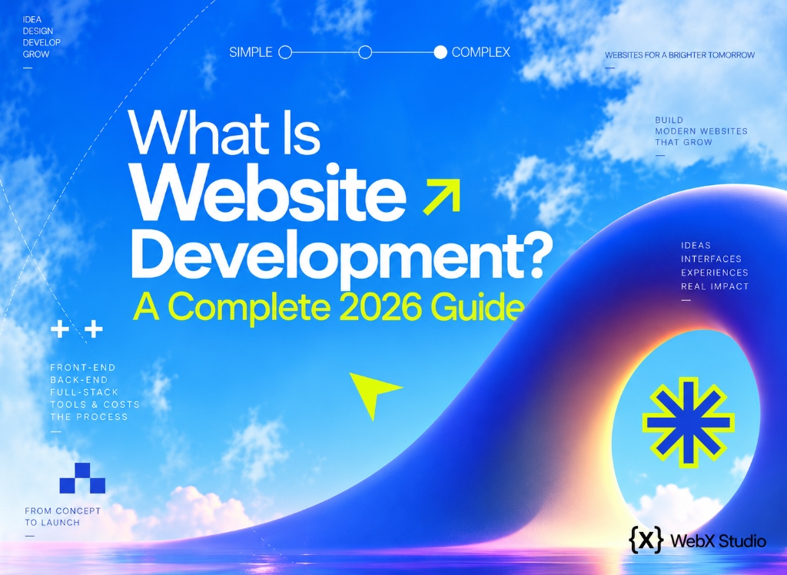

What is website development?
Website development is how a design becomes a living, working website - the code, the servers and the engineering behind everything you click. Here’s a clear, jargon-free guide to what it means, how it works, and what it costs in 2026.

Website development is the process of building, coding and maintaining a website - taking a visual design and turning it into a functioning site that people can actually use. If web design is the architect’s blueprint, web development is the construction crew that turns those drawings into a building you can walk into.
At Web{X} Studio we build websites for founders and businesses in India, the UK, the US and the Gulf. This guide explains, in plain English, exactly what website development involves - the meaning, the types, the stages, how long it takes and whether you need custom code or a website builder - so you know what you’re buying and can ask sharper questions of anyone you hire.
Website development is the engineering that turns a design into a working, fast, secure website - covering the front-end (what visitors see) and the back-end (the servers, databases and logic behind the scenes).
Website development meaning: a simple definition
Strip away the jargon and the meaning of website development is this: it’s every technical task needed to get a website online and keep it working. That includes writing the code for the pages, connecting forms and payments, setting up a content management system (CMS) so you can edit text yourself, making the site fast on a phone, securing it, and deploying it to a server so anyone can reach it at your domain.
A useful working definition has three parts:
- Building - turning an approved design into real pages that work in every browser and on every screen size.
- Connecting - wiring the site to the things it needs: a database, a CMS, a payment gateway, a CRM, analytics, email.
- Maintaining - updates, security patches, backups, fixes and improvements after launch. A website is never “finished”; it’s looked after.
You’ll also see the terms web development and website development used interchangeably. Strictly, web development is the wider field - it includes web applications, dashboards and online tools as well as websites - while website development usually means building a site for a business, brand or publication. For most buyers the difference doesn’t matter; what matters is what you’re building, which is where types come in.
The three layers of website development
Almost every website is built across three layers. Understanding them makes the whole industry click into place.
1. Front-end development (the client side)
The front-end is everything a visitor sees and touches - layout, buttons, menus, animations, forms. It’s built with three core technologies: HTML (structure), CSS (styling) and JavaScript (interactivity), often using frameworks like React or Next.js. Good front-end development is what makes a site feel fast, smooth and effortless on any device.
2. Back-end development (the server side)
The back-end is the engine room you never see - the servers, databases and application logic that store data, process logins, handle payments and serve the right content. It’s built with languages such as Node.js, PHP or Python, connected to databases like PostgreSQL or MongoDB. A brochure site may need almost no back-end; an ecommerce store or web app needs a lot.
3. Full-stack development (both together)
A full-stack developer works across both layers, from the interface down to the database. Most real projects need this range of skill - which is why studios exist: to bring design, front-end and back-end together into one coherent, well-engineered product.
Types of website development
The three layers describe who does what. The more useful question for a business is what kind of website you’re building, because that decides the scope, the tools and the budget. These are the main types of web development projects:
| Type | What it is | Good for |
|---|---|---|
| Static website | Fixed pages served as-is, with little or no database | Small business sites, portfolios, fast brochure sites |
| Dynamic / CMS website | Pages pulled from a database and edited through a CMS (WordPress, Webflow, a headless CMS) | Businesses that publish often: blogs, news, case studies, listings |
| Ecommerce website | A store with a product catalogue, cart, checkout and payments | Brands selling online - usually built on Shopify, WooCommerce or custom |
| Landing page | A single focused page built for one campaign and one action | Paid ads, launches, lead generation |
| Web application | Software in the browser, with logins, roles and real data | Dashboards, portals, booking systems, ERPs |
Many real projects mix these: a business website with a blog, a store with a few campaign landing pages, a marketing site in front of a web app. We break each one down, with examples, in our guide to the types of website development, and compare the two biggest architectures in static vs dynamic websites.
Website development vs web design - what’s the difference?
People use the terms interchangeably, but they’re different jobs:
| Web Design | Web Development | |
|---|---|---|
| Focus | How it looks & feels | How it works |
| Tools | Figma, brand systems, UX | Code, frameworks, databases |
| Output | A blueprint / prototype | A working website |
| Question it answers | “What should this be?” | “How do we build it?” |
The best results come when the two work together from day one. That’s the whole idea behind a Figma to Webflow or Figma to WordPress build - a clean handoff from design into development with nothing lost in translation.
Need a website actually built - not just designed?
We handle the full stack: design, front-end and back-end, engineered for speed and SEO. Tell us your goal and we’ll send a clear, itemised quote within two business days.
Start your projectThe website development process: 7 stages
Development rarely means “sit down and code.” A professional build moves through the same stages every time, and each one has a clear output you can sign off before the next begins. Here is the process as a flowchart:
- Discovery & planningGoals, audience, scope, sitemap and how success will be measured.
- UX & UI designWireframes, then a high-fidelity design in Figma, signed off before any build.
- Front-end developmentThe design becomes responsive, accessible pages in code or a visual platform.
- Back-end & CMSDatabases, integrations, payments and an editing system your team can use.
- Content & SEOFinal copy and images, meta titles, structured data and internal links.
- Testing & QADevices, browsers, forms, speed and accessibility checked and fixed.
- Launch & maintenanceDeploy, connect analytics, set redirects, then keep improving.
Skipping a stage rarely saves time - it moves the problem later, where it’s more expensive. We walk through each stage, what you should receive at the end of it and the mistakes that cause delays in our website development process guide.
How long does website development take?
The honest answer is “it depends on what you’re building” - but the ranges are predictable. These are realistic timelines for a professional build, from kickoff to launch:
| Project | Typical timeline | What drives it |
|---|---|---|
| Landing page | 1-2 weeks | Copy, form and tracking setup |
| Business website (5-10 pages) | 3-6 weeks | Number of unique page designs, CMS, content readiness |
| Ecommerce store | 6-10 weeks | Catalogue size, payments, shipping rules, integrations |
| Custom web app | 3-6 months+ | User roles, data model, third-party integrations |
The biggest variable is rarely the code. It’s how quickly content, images and feedback arrive. A project with copy ready on day one can finish at the short end of these ranges; one waiting on product photos can double. If you already have a finished Figma design, the build alone is faster - a Webflow landing page can be live in days, as we explain on our Figma to Webflow page. For the full breakdown of what speeds a project up and slows it down, read how long website development takes.
Custom website vs website builder
In 2026 there are three broad ways to get a website developed, and the right one depends on the project rather than on which is “best”:
| Custom code | Pro platform (Webflow, WordPress, Shopify, Framer) | DIY builder (Wix, Squarespace) | |
|---|---|---|---|
| Flexibility | Unlimited | High, within the platform | Limited to templates |
| Speed & SEO | Best, if built well | Very good when hand-built | Fine for small sites, hard to optimise further |
| Editing | Needs a CMS set up | Built-in, easy for teams | Easiest |
| Cost | Highest | Middle | Lowest upfront |
| Best for | Web apps, complex logic, unusual requirements | Most business websites and stores | Very small sites on a tight budget |
For most marketing sites a professionally built platform site is the sweet spot: the speed and polish of a custom build, with an editor your team can use without a developer. Custom code earns its cost when the site has to do something no platform does well - a portal, a calculator, an ERP. We compare the options head to head in custom website development vs website builders, and if you’ve already picked a platform, see our Figma to Shopify and Figma to WordPress services.
Why good development matters for SEO
Development quietly decides whether you ever rank. A site with clean semantic code, fast load times and stable layout passes Core Web Vitals - Google’s performance signals - while a bloated, slow build sinks. Structured data, accessibility, correct redirects and canonical tags, and mobile-first engineering are all development decisions with a direct SEO payoff. None of them are visible in a design file, which is why two sites that look identical can perform very differently in search.
Design gets people to admire your site. Development gets it to load, work and rank - which is what actually wins customers.
What does website development cost?
In 2026, a professional business website typically costs ₹40,000-₹2,00,000 (about $500-$2,500), while ecommerce stores and custom web apps run ₹3,00,000+. The number depends on design complexity, features, integrations and performance work - not on the word “development” itself. For the full breakdown, see our website cost guide, or the website cost guide for Punjab if you’re hiring locally.
How to choose who develops your website
Whoever you hire - freelancer, studio or agency - the same questions separate good developers from risky ones:
- Can they show live sites, not just screenshots? Open them on your phone. Are they fast? Do the forms work?
- Do they design and build, or only one? Handoffs between separate designers and developers are where quality leaks.
- Is SEO part of the build? Titles, structured data, speed and redirects should be included, not sold later.
- Will you own everything? Domain, hosting, code and CMS access should be in your name.
- Is the quote fixed and itemised? Hourly billing on a website usually means the scope was never pinned down.
If you’re in Punjab, we’re a web development company in Ludhiana that meets clients in person, and we work with businesses across the state as a web design company in Punjab. Our guide to choosing a web design agency has the full checklist.
The takeaway
Website development is the engineering craft that turns an idea and a design into a fast, secure, working website. It spans front-end and back-end, comes in a handful of distinct types, follows a predictable seven-stage process, and takes anywhere from a week for a landing page to several months for a web app. Whether it’s hand-coded or built on a modern platform, good development is what makes a site load quickly, work flawlessly and rank on Google. Get it right, and everything else - marketing, sales, SEO - has a solid foundation to stand on.
Ready to get your website built?
Tell us what you’re building. You’ll get a fixed, itemised quote and a realistic timeline within two business days - no hourly meter.
Get a fixed quote